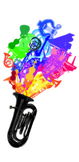

Voorrondes
De voorrondes worden gehouden op 4 en 27 maart en beginnen om 19.30 in de Blauwe Zaal van het Auditorium van de Technische Universiteit Eindhoven. Deelnemers worden op één van de twee voorrondes ingedeeld zodat uiteindelijk maximaal tien deelnemers per avond hun kunsten ten gehore zullen brengen. De jury selecteert twee of drie finalisten per voorronde. Daarnaast heeft het publiek een stem in de voorrondes: door het publiek wordt per voorronde één finaleplaats toegewezen. Alle publiek is welkom, de toegang is gratis. Ensembles die buiten mededinging voor de prijzen willen optreden kunnen contact opnemen met de organisatie.